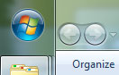
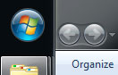

Unglass makes things opaque when a window is maximized.

→
Unglass.zip — new version (changes transparency globally)
There is no GUI: just start the program. Kill it from the Task Manager.
Old versions: OldUnglass.zip and OldUnglassTaskbarOnly.zip (uses underlays)
Changing color: Personalize → Desktop Background → Solid Colors, then switch back to your wallpaper (if any).